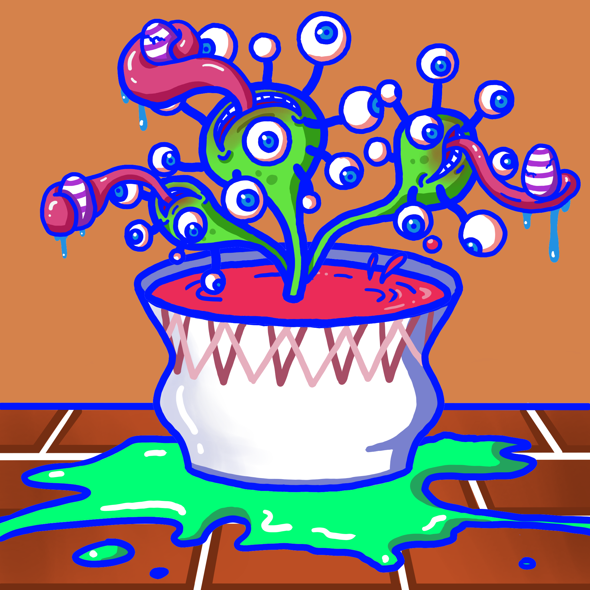
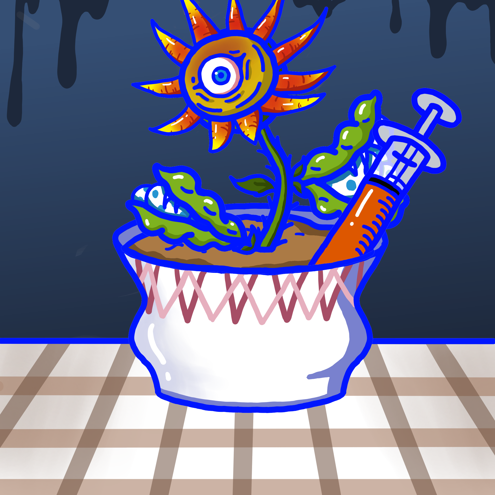

진화형 NFT Project
Kepler-452b
본 프로젝트는 세포를 성장하는 진화형 NFT 입니다
매일 일정 확률에 따라 성장하여 추가적인 세포를 얻을 수 있는 귀여운 메타세포를 구매하세요
About
Kepler-452b의 자세한 정보,
[MORE]버튼을 누르고 확인해보세요!
특이하지만 매력 넘치는 식물,
다 함께 길러볼까요?
안녕하세요, 운영진 Keplin입니다.
Keplin 팀은 진화형 NFT 컬렉션 프로젝트를 진행하고자 합니다.
MORE
Story
메타세포의 매력은 겉모습 뿐만이 아니죠~
지구를 정화하는 메타세포!
Metacell
특이하지만 매력 넘치는 식물,
다 함께 길러볼까요?
Cell


Sprout
Adult

Spawning
- 

- 


FAQ
궁금한 점이 많으시죠?
같이 한 번 알아볼까요?
-
Q. Kepler-452b에서 민팅하는 NFT는 10,000개로 한정되어 있나요?
-
A.
케플린 연구소는 총 10,000개의 메타세포를 소유하고 있습니다.
이 중 500개의 메타세포는 이벤트 및 기타 행사 등을 위해 연구소가 관리합니다.
즉, 민팅되는 메타세포는 총 9,500개입니다.
메타세포는 번식을 통해 끊임없이 증식하여 보다 많은 메타세포가 발행될 예정입니다. -
Q. 어떻게 진화하나요?
-
A.
Kepler-452b NFT를 소지하고 있다면 진화 대상입니다.
세포 - 새싹 - 성체 - 산란기 순서의 단계로 진화하게 됩니다.
산란기의 경우 진화 시, 성체로 돌아오며 새로운 세포를 얻게 됩니다.
-
Q. 채굴이 가능한 프로젝트 인가요?
-
A.
본 프로젝트는 토큰을 발행 및 채굴하지 않습니다.
토큰을 발행하는 것 자체는 어렵지 않으나, 소각처를 만들고 인프라를 형성하는 것은 고도의 단계입니다.
다만, Keplin은 토큰 채굴이 아닌 NFT 채굴 시스템을 갖춘 프로젝트입니다.
-
Q. 어떻게 구매할 수 있나요?
-
A.
Kepler-452b는 클럽스에만 단독 리스팅되며, Mix 토큰으로 거래할 수 있습니다.
민팅 형식은 판매로 진행됩니다.
메타세포 자체가 랜덤박스의 역할임에 따라 랜덤 민팅이 아닌 판매로 진행합니다.
-
Q. 진화는 언제 되는건가요?
-
A.
민팅이 완료된 이후 ?일 뒤부터 각 NFT는 일정한 확률로 진화하게 됩니다.
100% 코드로 구성되어 있으며 오전에 진화를 거치고, 오후에 결과를 확인할 수 있습니다.
Team
센스와 기술을 겸비한 Keplin 팀을 소개합니다
-

CEO
Keplin
-
Designer
Sera
-

Developer
Orbit
-

Communicator
Goldot